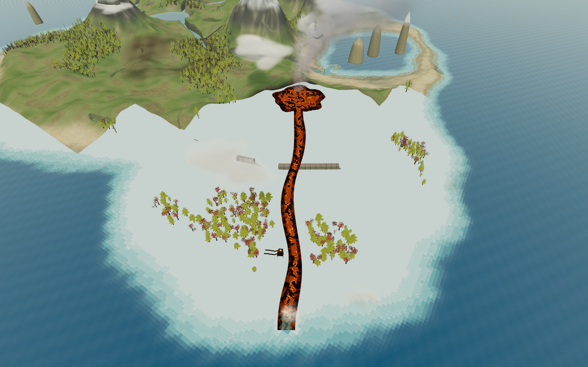
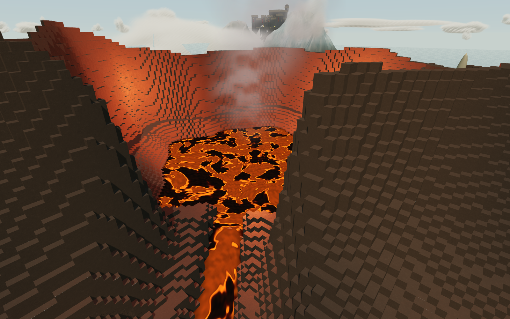
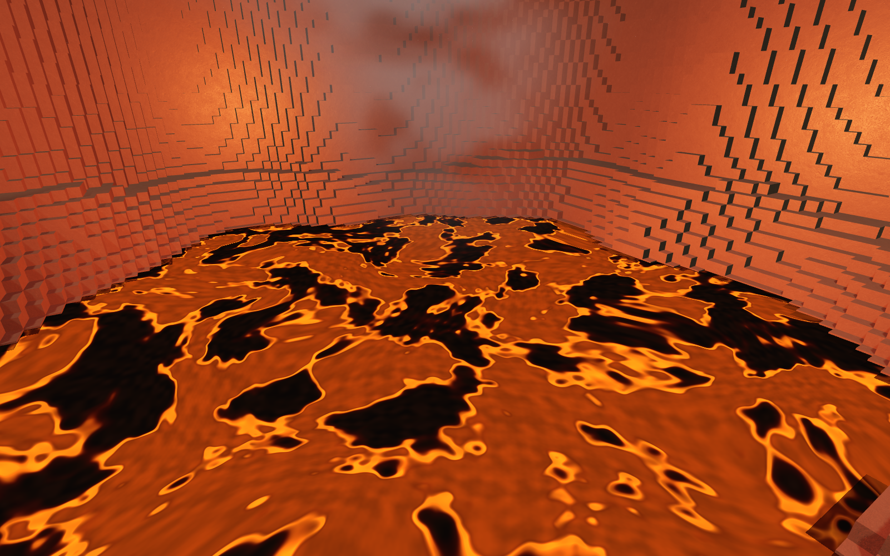
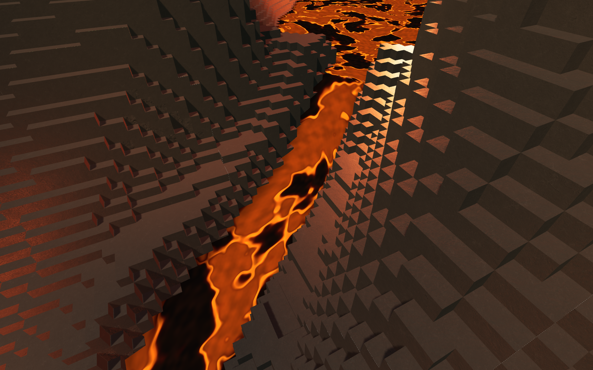
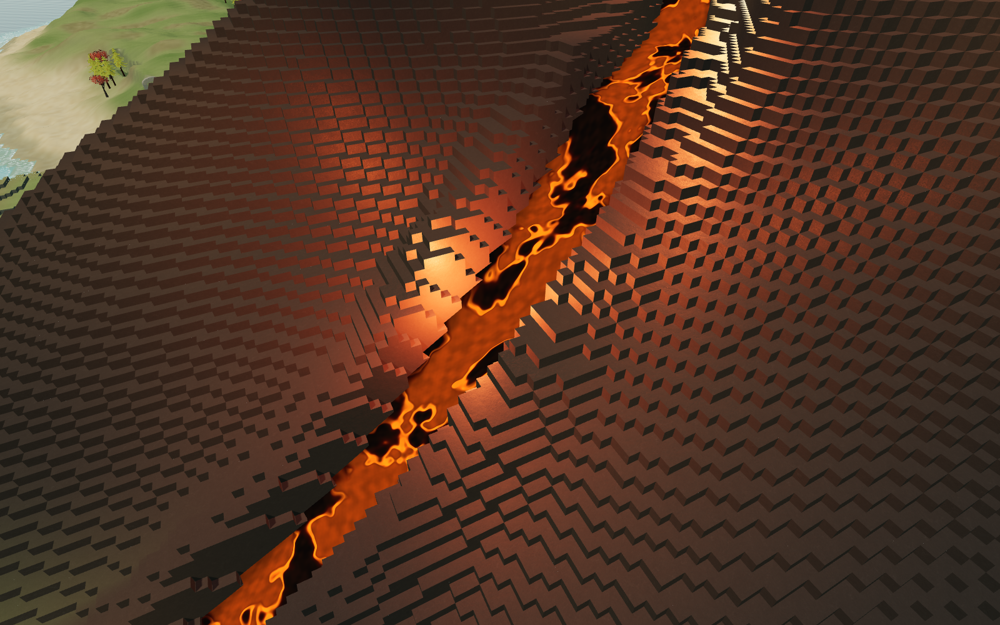
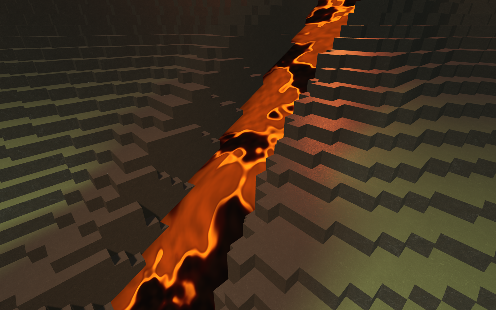
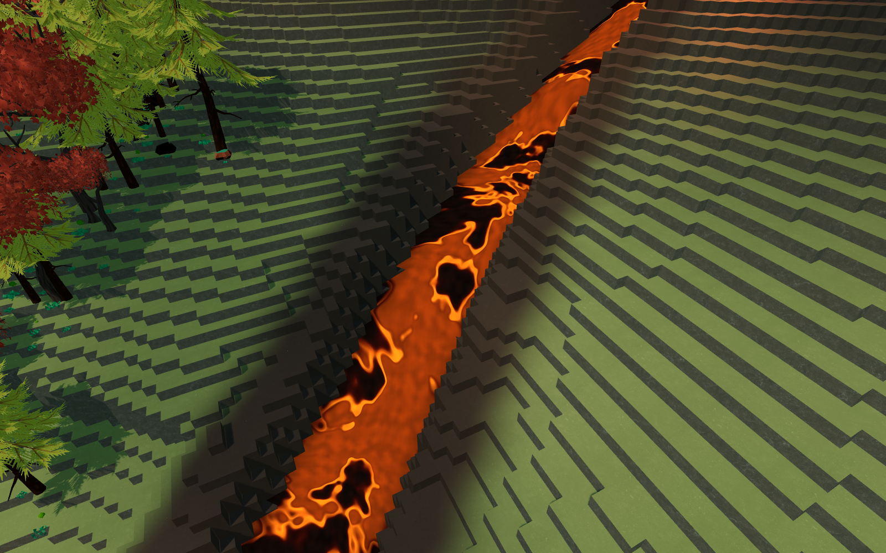
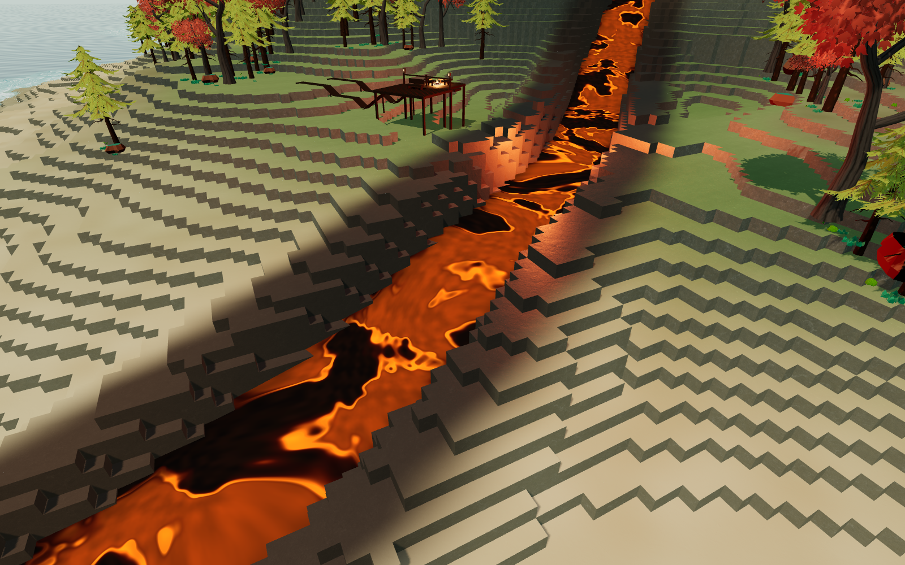
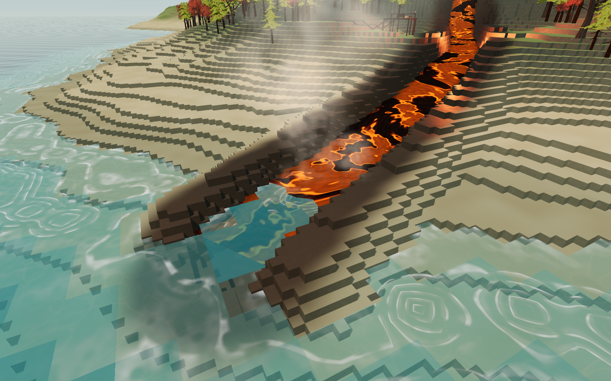
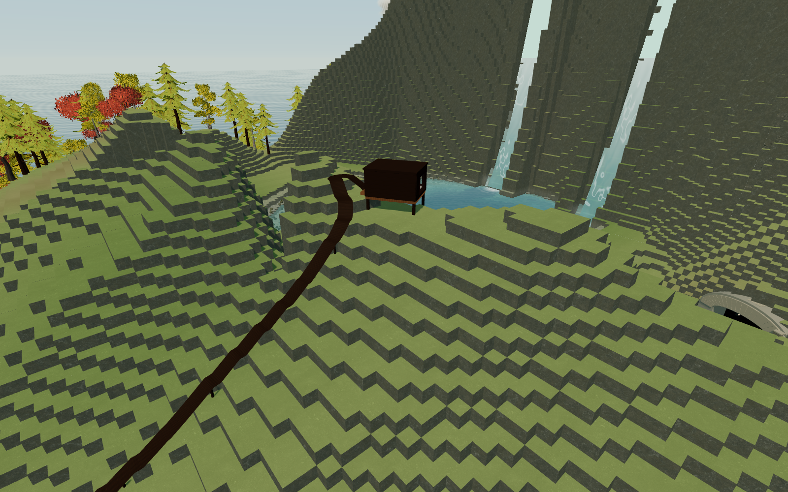

A detailed tour of the contained caldera, solid river banks, scorched rock and ocean entry. Click any picture to inspect the full 1600 × 1000 image.
The full route, from the enclosed caldera down the mountain to the ocean.

An uneven solid rock rim surrounds the pool, with one supported outlet.

Dark crust rafts, hot fissures and varied temperatures share one texture scale with the river.

Lava passes between solid block shoulders at the start of the descent.

Weathered shelves vary independently on either side of the channel.

These visible steps are terrain blocks that support the player.

Scorched basalt follows the flow into the lower forest, fading into the surrounding terrain.

A wider, shallower descent approaches the shore beside the existing lookout.

Solid shoreline shoulders taper into an open ocean mouth, with steam above the lava-water contact.

The waterfall lake remains contained beside the railway.
